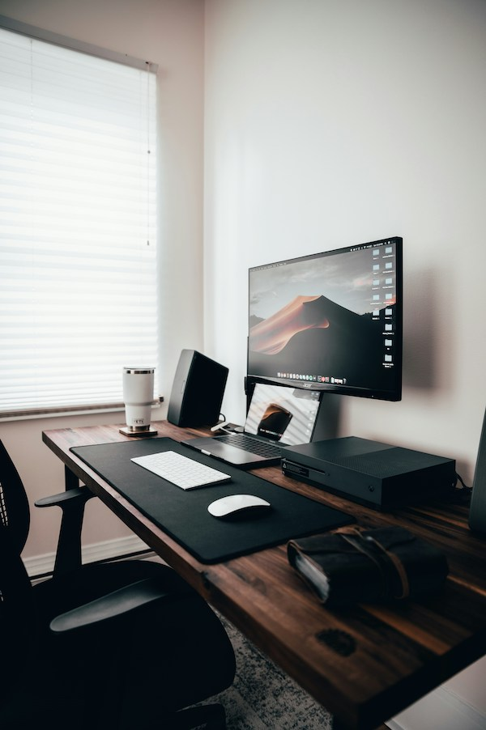
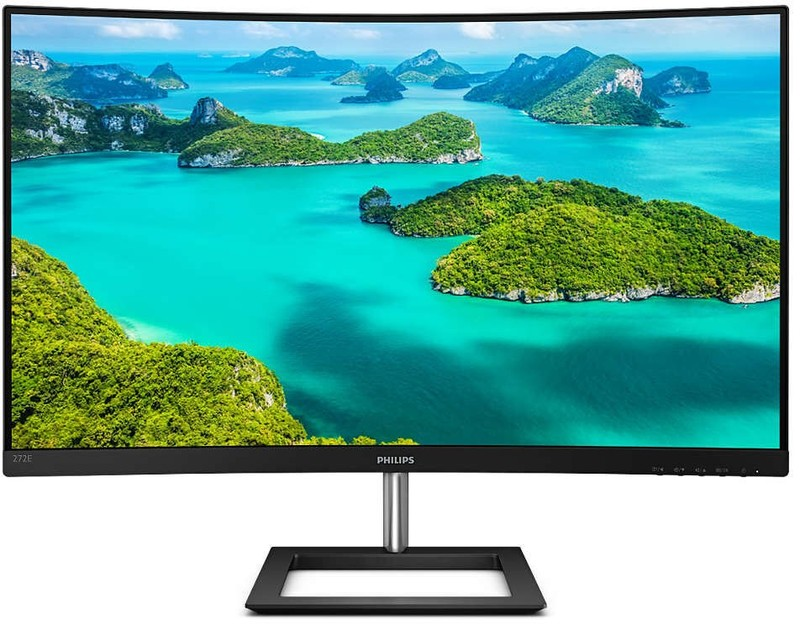

Klõpsa hiirega pildil oleval esemel, et näha selle kohta lähemalt.

Monitor on peamine väljundseade, mis kuvab kasutajaliidest ja tööks vajalikku infot.
Kaardus ekraan pakub laiemat vaatevälja ja mugavamat töökogemust pikaajalisel istumisel.
Ekraan on paigutatud silmade kõrgusele, et tagada õige ja ergonoomiline kehaasend.
